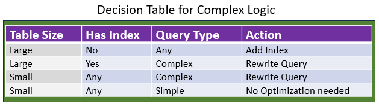

Skills_1.6_Common_Pitfalls¶
For: All skill creators
Prerequisites: Sections 1.1-1.5 (foundation through components)
What you'll learn: The most common mistakes in skill creation and how to avoid them
Introduction¶
You've learned the theory (Sections 1.1-1.4) and mastered the components (Section 1.5). Now we explore what goes wrong in practice.
This section covers the 10 most common pitfalls in skill creation, drawn from real-world experience and Anthropic's best practices. Each pitfall includes:
• What it looks like ( example)
• Why it's a problem (consequences)
• How to avoid it ( prevention)
• How to fix it ( remediation)
Learning from mistakes is faster than learning from theory. Let's dive in.
Pitfall 1: Scope Creep¶
What It Looks Like Skill that does too much:
name: managing-databases
description: >
Handle all database operations including schema design,
query optimization, data migration, backup/restore,
user management, performance tuning, security audits,
and incident response.
The skill tries to be:
• Schema designer
• Query optimizer
• Migration manager
• DBA tool
• Security auditor
• Incident responder
All in one!
Why It’s a Problem¶
1. Activation Confusion- Model doesn't know WHEN to activate:
• User says "optimize this query" → Should managing-databases activate?
• Or is query optimization separate?
• Unclear boundaries = unreliable activation
2. Unmaintainable Size- Covering 6 different domains in one skill means:
• Thousands of lines of instructions
• Impossible to maintain
• Hard to test
• Difficult to improve
3. Decision Logic Chaos
<decision_criteria>
IF user asks about schema design:
[100 lines of schema logic]
ELSE IF user asks about query optimization:
[200 lines of optimization logic]
ELSE IF user asks about migrations:
[150 lines of migration logic]
ELSE IF user asks about backups:
[100 lines of backup logic]
</decision_criteria>
Unreadable mess!
4. Unclear Success Criteria
What does success mean for a skill that does 6 things?
• Schema designed correctly?
• Query optimized?
• Migration successful?
• All of the above?
Impossible to verify!
How to Avoid it¶
Single Responsibility Principle¶
Each skill should do ONE thing well.
Instead of: name: managing-databases # Too broad!
Create separate skills:
name: designing-database-schemas
name: optimizing-sql-queries
name: managing-database-migrations
name: performing-database-backups
The "One Sentence Test"¶
Can you describe the skill in one sentence without using "and"?
*Fails test:*
"This skill designs schemas AND optimizes queries AND manages migrations."
*Passes test:*
"This skill optimizes slow SQL queries using systematic analysis."
Exclusions in Scope Definition¶
Use <exclusion> to clarify boundaries:
<exclusion>
Do NOT use this skill for:
- Schema design → Use designing-database-schemas
- Database migrations → Use managing-database-migrations
- User management → Use managing-database-users
- Security audits → Use auditing-database-security
</exclusion>
How to Fix It:¶
If your skill suffers from scope creep:
Step 1: Identify Distinct Responsibilities
List everything the skill does:
1. Schema design
2. Query optimization
3. Migrations
4. Backups
5. User management
6. Security audits
Step 2: Split Into Focused Skills
Create separate skill for each responsibility:
• designing-database-schemas
• optimizing-sql-queries
• managing-database-migrations
• performing-database-backups
• managing-database-users
• auditing-database-security
Step 3: Add Cross-References
In each skill's <exclusion>:
<exclusion>
Do NOT use optimizing-sql-queries for:
- Schema design → Use designing-database-schemas
- Migrations → Use managing-database-migrations
</exclusion>
Models can now activate the RIGHT skill for each task!
Pitfall 2: Vague Activation Criteria¶
What It Looks Like Unclear description:
Questions this raises¶
• What languages? (Python? JavaScript? All languages?)
• What kind of help? (Writing? Reviewing? Debugging? Optimizing?)
• When to activate? (Always? Only for certain tasks?)
Why It's a Problem¶
1. Won't Activate When Needed
User: "Can you review this Python function for bugs?"
Model thinks:
• helping-with-code says "help with coding tasks"
• But is code review "helping"?
• Or is it something else?
• Uncertain → doesn't activate
Skill sits idle when it should be working!
2. Activates When Shouldn't
User: "Help me understand how this algorithm works"
Model thinks:
• User said "help" and "algorithm" (code-related)
• helping-with-code says "help with coding tasks"
• Activates when explanation skill would be better!
Wrong skill for the task!
3. Competes with Other Skills
If you have:
• helping-with-code (vague)
• reviewing-python-code (specific)
• debugging-javascript (specific)
Which should activate for "help debug my Python"?
Vague descriptions create activation conflicts!
How to Avoid It¶
Specific WHAT + WHEN + KEYWORDS Pattern:
description: >
[WHAT] Specific capability description
[WHEN] Clear trigger conditions
[KEYWORDS] Terms users might say
Vague Activation Example¶
name: reviewing-python-code
description: >
Review Python code for bugs, security vulnerabilities, and
performance issues using systematic analysis. Use when user
provides Python code and requests review, audit, or bug detection.
Keywords: review, audit, bug, security, vulnerability, Python.
Clear signals:
• WHAT: Review Python code for specific issues
• WHEN: User provides code AND requests review
• KEYWORDS: review, audit, bug, security, vulnerability
Think about how users actually ask for this:
Users might say:
• "Review this Python code"
• "Can you audit this for security issues?"
• "Find bugs in this function"
• "Check for vulnerabilities"
Include those terms in description!
description: >
... Keywords: review, audit, bug, check, security,
vulnerability, find issues, code quality.
Test Activation Reliability¶
Try these scenarios:
Should activate:
• "Review this Python code for bugs" →
• "Audit this function for security issues" →
• "Can you find vulnerabilities in this code?" →
Should NOT activate:
• "Explain how this algorithm works" → (explanation, not review)
• "Write a Python function to..." → (writing, not review)
• "Review this JavaScript code" → (wrong language)
If activation unclear → refine description!
How to Fix It: Skill Activation Problems¶
If your skill has vague activation criteria:
Step 1: Analyze Failed Activations
When did skill NOT activate when it should have?
• User said what?
• What keywords were present?
• Why didn't model activate?
Step 2: Add Missing Keywords
-Before-
description: Help with coding tasks
-After-
description: >
Review Python code for bugs, security vulnerabilities, and
performance issues. Use when user requests code review, audit,
bug detection, or quality analysis for Python files.
Keywords: review, audit, bug, security, vulnerability,
quality, analyze, check, Python, .py file.
Step 3: Test and Iterate
Try activation scenarios:
• Does it activate when it should?
• Does it stay inactive when it shouldn't?
Refine until activation is reliable!
Pitfall 3: Missing or Inadequate Unload Conditions¶
What It Looks Like No unload conditions:
Optimizing SQL Queries
[Skill content...]
[No <unload_condition> section at all!]
Or vague unload conditions:
<unload_condition>
Stop when done.
</unload_condition>
Why Not Unloading Skills is a Problem¶
1. Attentional Residue
Without clear unload conditions:
User: "Optimize this SQL query"
Skill: activates optimizing-sql-queries
Midway through optimization...
User: "Actually, never mind. Can you help me with Python instead?"
Skill: still active, thinking about SQL optimization while user wants Python help
Result: Degraded performance on Python task because SQL context still present!
This is attentional residue
2. Skill Never Deactivates
Without clear exit signals:
• Skill stays active for entire conversation
• Interferes with subsequent tasks
• Creates confusion when multiple skills should activate
3. User Intent Change Ignored
The #1 unload priority is missing!
User changes direction → Skill should immediately deactivate
Without this: Skill persists when user has moved on!
How to Avoid Unload Condition Problems¶
ALWAYS Include Unload Conditions Every skill MUST have:
<unload_condition>
Stop using this skill when:
**User Intent Change (CHECK FIRST):**
[User Intent Change signals]
**Task Complete:**
[Task-specific completion signals]
**Domain Switch:**
[Switches to different skills/domains]
**Explicit Stop:**
[User says "stop", "cancel", etc.]
</unload_condition>
<unload_condition>
Stop using this skill when:
**User Intent Change (CHECK FIRST):**
1. User says "Actually...", "Never mind...", "Wait...", "Instead..."
2. User asks unrelated question (topic shift to different domain)
3. User shows dissatisfaction with current approach
4. User provides contradictory information (reverses requirements)
[Other conditions follow...]
</unload_condition>
Specific Task Completion Signals¶
Vague:
Specific:
Task Complete:
- Query execution time reduced by >50%
- EXPLAIN ANALYZE shows index usage (not Seq Scan)
- Regression tests pass (no queries got slower)
- User confirms "This meets requirements" or similar
How to Fix- Add Unload Consitions¶
If your skill lacks unload conditions:
Step 1: Add the Mandatory Template
<unload_condition>
Stop using this skill when:
**User Intent Change (CHECK FIRST):**
1. User says "Actually...", "Never mind...", "Wait...", "Instead..."
2. User asks unrelated question (topic shift)
3. User shows dissatisfaction
4. User provides contradictory information
**Task Complete:**
[Define what "complete" means for YOUR task]
**Domain Switch:**
[Define when to switch to other skills]
**Explicit Stop:**
User says "stop", "that's enough", "cancel"
</unload_condition>
Step 2: Define Task-Specific Completion
For YOUR skill, what does "complete" mean?
SQL optimization:
• Execution time improved >50%
• EXPLAIN shows index usage
• Regression tests pass
Code review:
• All files reviewed
• Issues documented
• User confirms review complete
Document formatting:
• All formatting applied
• User confirms looks correct
Make it specific and observable!
Step 3: Test Deactivation
Scenarios to test:
**Should deactivate:**
• User says "Actually, never mind" →
• Task complete signals met →
• User switches domains →
**Should stay active:**
• Task in progress, user asks clarifying question →
• Intermediate step complete, final step remains →
Pitfall 4: Over-Complicated Decision Logic¶
What It Looks Like: Unreadable nested conditions:
<decision_criteria>
IF query slow AND table large AND index missing THEN add index ELSE IF query slow
AND table small AND query complex THEN rewrite query ELSE IF query slow AND joins present THEN
optimize joins UNLESS joins already optimized THEN check WHERE clause UNLESS WHERE
clause already optimal THEN consider materialized view BUT ONLY IF update frequency low
AND read frequency high AND storage not constrained...
</decision_criteria>
Why Overcomplicating Skills is a Problem¶
1. Impossible to Maintain
Try adding a new condition:
• Where does it go?
• Does it conflict with existing conditions?
• How do you test it?
Unmaintainable complexity!
2. Hard to Verify
Which path will execute for given input?
• 10+ nested conditions
• Multiple UNLESS clauses
• Hard to trace logic
Can't verify correctness!
3. Models Get Confused
Even AI models struggle with deeply nested logic:
• Lose track of which branch they're in
• Miss edge cases
• Execute wrong path
Unreliable execution!
How to Avoid Overcomplicating Skills¶
Break Into Phases Instead of one giant condition:
<decision_criteria>
**Phase 1: Gather Information**
IF user provides EXPLAIN output:
→ Analyze directly
ELSE:
→ Run EXPLAIN ANALYZE first
**Phase 2: Identify Bottleneck**
IF Seq Scan on large table:
→ Bottleneck is missing index
ELSE IF Nested Loop with high cost:
→ Bottleneck is join strategy
ELSE IF Sort operation:
→ Bottleneck is ORDER BY
**Phase 3: Apply Fix**
Based on bottleneck identified:
- Missing index → Add index to WHERE columns
- Join strategy → Optimize join order or type
- ORDER BY → Add index to sort columns
</decision_criteria>
Maximum 3 Levels Deep¶
Rule of thumb: If nesting goes beyond 3 levels, refactor!
Too deep (4+ levels):
IF A:
IF B:
IF C:
IF D: ← 4 levels, too deep!
Better (2-3 levels):
Phase 1: Check A
IF A → Handle A case
Phase 2: Check B
IF B → Handle B case
Phase 3: Check C
IF C → Handle C case
Use Decision Tables for Complex Logic¶

For multiple interacting conditions:
<decision_criteria>
___________________________________________________
| Table | Has | Query | Action |
| Size | Index | Type | |
|---------------|---------|------------------------|
| Large | No | Any | Add index |
| Large | Yes | Complex | Rewrite query |
| Small | Any | Complex | Rewrite query |
| Small | Any | Simple | No optimization needed |
|__________________________________________________|
**Implementation:**
1. Determine table size (>100K rows = large)
2. Check if index exists on filtered columns
3. Assess query complexity (>3 JOINs = complex)
4. Apply action from table above
</decision_criteria>
How to Fix It- Decision Logic ¶
If your decision logic is too complex:
Step 1: Draw It Out
Visualize the decision tree:
Start
├─ Condition A?
│ ├─ Yes → Action 1
│ └─ No → Check B
│ ├─ Yes → Action 2
│ └─ No → Action 3
If tree has >4 levels or >10 nodes → too complex!
Step 2: Identify Phases
Group related decisions:
• Phase 1: Gathering information
• Phase 2: Analysis
• Phase 3: Action selection
• Phase 4: Verification
Step 3: Simplify Each Phase
Within each phase, maximum 2-3 decision points:
**Phase 2: Identify Bottleneck**
Check in priority order:
1. Missing index? (most common)
2. Poor join strategy? (second most common)
3. Inefficient sort? (third most common)
Take first match, skip rest.
Pitfall 5: Insufficient Examples¶
What It Looks Like Only one example:
That's it!No examples for:
Why It's a Problem- Insufficient Examples¶
1. Users Don't Understand Edge Cases
With one example, users don't know:
• What about 2-item lists? ("A and B")
• What about items containing commas? ("Bob, the builder")
• What about "or" lists? ("A, B, or C")
Unclear edge case handling = errors!
2. Models Miss Nuance
Single example doesn't show:
• Variations in input
• Different scenarios
• Special handling
Models might misapply skill to edge cases!
3. No Verification Template
How do users verify correctness without examples showing expected behavior?
How to Avoid It- Insufficient Examples¶
The 3-Example Minimum Every skill needs at least 3 examples:
1. Simple case (happy path)
2. Common variation (typical real-world scenario)
3. Edge case (challenging situation)
The 3-Minimum Example:
<example>
**Example 1: Basic list (3+ items)**
Input: "I like apples, oranges and bananas."
Output: "I like apples, oranges, and bananas."
Change: Added comma before "and"
**Example 2: Two items only**
Input: "I like apples and oranges."
Output: "I like apples and oranges."
Change: None (two items don't need Oxford comma)
**Example 3: Items with internal commas**
Input: "I invited my parents, Kris and Sam."
Output: "I invited my parents, Kris, and Sam."
Change: Added comma before "and" to avoid ambiguity
Clarification: Without Oxford comma, unclear if parents ARE Kris and Sam
</example>
Example Progression by Class¶
Class A: 2-3 examples (simple cases)
Class B: 3-5 examples (multiple scenarios)
Class C: 5-10+ examples (comprehensive coverage including:)
• Before/after transformations
• Multiple real-world scenarios
• Edge cases and exceptions
• Production contexts with verification
Show What NOT to Do¶
Combine <example> with <bad_pattern>:
<bad_pattern>
Treating 2-item lists like 3+ item lists
<example>
Input: "I like apples and oranges."
Output: "I like apples and oranges." ← No comma for 2 items
Why this matters:
Two-item lists with Oxford comma look awkward and violate standard grammar.
</example>
</bad_pattern>
How to Fix It- Too few Examples¶
If your skill has too few examples:
Step 1: Identify Scenarios
List all the scenarios your skill handles:
1. Basic case (happy path)
2. Empty input
3. Malformed input
4. Edge case A
5. Edge case B
6. Special condition C
Step 2: Create Examples for Each
Aim for 3-5 minimum (Class A/B) or 5-10+ (Class C)
Step 3: Include Context
For each example, explain:
• What makes this case special
• Why the skill handles it this way
• What would go wrong without proper handling
<example>
Scenario: Items containing "and"
Input: "I need bread, peanut butter and jelly, and milk."
Output: "I need bread, peanut butter and jelly, and milk."
**Why this is tricky:**
- "peanut butter and jelly" is ONE item (sandwich ingredient)
- The final "and" before "milk" gets Oxford comma
- Without proper parsing, might add comma in wrong place
**How skill handles it:**
Identifies "peanut butter and jelly" as single item (no commas inside)
Applies Oxford comma only to list-level "and" (before "milk")
</example>
Pitfall 6: No Self-Verification¶
What It Looks Like Missing verification section:
Optimizing SQL Queries
[All other components present...]
[No <verification> section!]
Or placeholder verification:
Why No self-verification is a Problem¶
1. Can't Verify Success
User: "Did the optimization work?"
Model: "I think so?"
User: "How do I know?"
Model: "Uh... run it and see?"
No systematic verification = hope-based quality!
2. Anthropic's #1 Recommendation
From Anthropic's best practices:
"Include tests, screenshots, or expected outputs so Claude can check itself.
This is the single highest-leverage thing you can do."
Without self-verification, you're missing the highest-leverage improvement!
4. Errors Go Undetected
Optimization might:
• Make query slower (regression!)
• Break correctness (wrong results!)
• Violate constraints (missing data!)
Without verification, these go unnoticed until production!
How to Avoid Self-Verification Problems¶
Always Include Verification Section Minimum requirement:
<verification>
To verify [task] was successful:
1. [Check criteria 1]
2. [Check criteria 2]
3. [Check criteria 3]
All checks must pass for success.
</verification>
Automated Verification (Best)¶
Provide verification scripts:
<verification>
Automated verification (recommended)
Run verification script:
bash
./scripts/verify.sh query_file.sql
What it checks:
1. Execution time improvement (>50% required)
2. EXPLAIN output shows index usage
3. Query plan cost reduction
4. No regression in related queries
5. Resource usage acceptable
**Exit codes:**
• 0: All checks passed ✓
• 1: Verification failed (details in output)
• 2: Prerequisites missing
If script unavailable, use manual verification below: [Manual procedures provided]
</verification>
scripts/verify.sh (included in skill)
Manual Verification Checklist¶
When scripts aren't available:
<verification>
Manual verification steps:
Step 1: Performance Check
□ Run EXPLAIN ANALYZE on optimized query
□ Compare execution time to baseline
□ Confirm >50% improvement
Step 2: Correctness Check
□ Verify result row count matches baseline
□ Spot-check 10 random rows (values identical)
□ Run aggregation checks (SUM, COUNT match)
Step 3: Side Effects Check
□ Test related queries (ensure no slowdowns)
□ Check INSERT/UPDATE performance (<30% slower acceptable)
□ Verify no queries timing out
Step 4: Production Readiness
□ Test with production data volume
□ Verify under realistic load
□ Check error logs (no new errors)
All steps must pass for verification to succeed.
</verification>
Expected Output Method¶
For transformations/formatting:
<verification>
Self-verification using expected outputs:
Run through test cases:
Test Case 1:
Input: "A, B and C"
Expected: "A, B, and C"
Check: Comma appears before "and" ✓
Test Case 2:
Input: "A and B"
Expected: "A and B"
Check: No comma added (only 2 items) ✓
Test Case 3:
Input: "I invited my parents, Kris and Sam."
Expected: "I invited my parents, Kris, and Sam."
Check: Comma added to avoid ambiguity ✓
All test cases must pass.
</verification>
How to Fix It-Verification¶
If your skill lacks verification:
Step 1: Identify Success Criteria
From <success_criteria>, what needs verification?
Identifying Needed Verification Example:
<success_criteria>
✓ Query execution time reduced >50%
✓ EXPLAIN shows index usage
✓ No regressions
</success_criteria>
Step 2: Create Verification for Each Criterion
<verification>
**Verify Criterion 1: >50% improvement**
→ Run EXPLAIN ANALYZE, compare times, calculate improvement %
**Verify Criterion 2: Index usage**
→ Check EXPLAIN output for "Index Scan" (not "Seq Scan")
**Verify Criterion 3: No regressions**
→ Run test suite: ./scripts/test_suite.py --regression-check
</verification>
Step 3: Provide Tools When Possible
If Class C skill, include verification scripts:
• scripts/verify.sh - Automated verification
• scripts/test_suite.py - Regression testing
• scripts/compare_results.py - Result comparison
Link from verification section!
Pitfall 7: Missing Failure Modes in Unload Conditions¶
What It Looks Like-No failure modes
Only success-path unload conditions, no failure modes:
No failure modes defined!What if? • Task can't be completed? • Required resources unavailable? • After 5 attempts, still no success?
Why no failure modes is a Problem¶
1. Infinite Loops
2. Without failure modes:
User: "Optimize this query"
Skill tries:
• Attempt 1: Add index → No improvement
• Attempt 2: Different index → No improvement
• Attempt 3: Rewrite query → No improvement
• Attempt 4: Try another approach → No improvement
• Attempt 5-100: Keep trying forever...
Never stops trying because no failure condition defined!
2. No Graceful Degradation
When things go wrong:
• Can't access database → Skill keeps trying
• Missing permissions → Skill keeps requesting
• Impossible task → Skill never admits defeat
No exit = user stuck in loop!
3. No Escalation Path
Complex problems might need:
• Human expert (DBA)
• Different approach entirely
• Acknowledgment that skill can't solve this
Without failure modes, no path to escalate!
How to Avoid It-Adding Failure Modes¶
Include Failure Mode Section
<unload_condition>
Stop using this skill when:
**User Intent Change (CHECK FIRST):**
[User Intent Change signals]
**Task Complete:**
[Success signals]
**Failure Mode:**
1. After N attempts with insufficient progress → Escalate to [expert]
2. Required resources unavailable → Notify user, cannot proceed
3. Verification consistently fails → Review approach with user
4. User lacks required permissions → Request permissions or escalate
**Domain Switch:**
[Domain changes]
**Explicit Stop:**
[User stops]
</unload_condition>
Define "Insufficient Progress"¶
Be specific about what "failure" means:
Vague:
Specific:
Failure Mode:
1. After 3 optimization attempts with <20% improvement → Escalate to DBA
2. After 5 verification failures → Rollback changes, review with user
3. If EXPLAIN shows worse performance than baseline → Immediate rollback
Provide Escalation Paths¶
When skill can't solve the problem:
Failure Mode:
After 3 attempts with insufficient improvement:
→ Notify user: "This query may require DBA-level optimization"
→ Suggest escalation: "Consider consulting database administrator"
→ Provide context: "Attempted index optimization, query rewrite, join tuning—
all showed <20% improvement. This may require system-level changes."
→ Deactivate skill
How to Fix It Identifying failure scenarios¶
If your unload conditions lack failure modes:
Step 1: Identify Failure Scenarios
What could go wrong?
• Required resources unavailable (database offline, files missing)
• Insufficient permissions (can't CREATE INDEX, can't write files)
• Task impossible (no optimization possible, query already optimal)
• Repeated failures (N attempts, all unsuccessful)
• Constraints violated (optimization breaks correctness)
Step 2: Define Thresholds
For each failure scenario:
• How many attempts before giving up?
• What metrics indicate failure?
• When is task impossible vs. just difficult?
Faulure Scenario Example:
Thresholds:
- Max 3 optimization attempts
- Success = >50% improvement
- Failure = <20% improvement after 3 attempts
- Impossible = Query already optimal (baseline <100ms)
Step 3: Add to Unload Conditions
<unload_condition>
**Failure Mode:**
1. After 3 attempts with <20% improvement:
→ Notify: "Optimization attempts unsuccessful"
→ Suggest: "May require DBA consultation for system-level tuning"
→ Deactivate skill
2. Database connection unavailable:
→ Notify: "Cannot proceed without database access"
→ Suggest: "Verify database is online and credentials are correct"
→ Deactivate skill
3. User lacks CREATE INDEX permission:
→ Notify: "Optimization requires INDEX creation permission"
→ Suggest: "Request permission from DBA or provide query for DBA to optimize"
→ Deactivate skill
</unload_condition>
Pitfall 8: Ignoring User Intent Change Priority¶
What It Looks Like User Intent Change buried in middle:
<unload_condition>
Stop when:
**Task Complete:**
1. Optimization successful
2. Verification passed
**User Intent Change:**
3. User says "Actually, never mind"
4. User asks different question
**Explicit Stop:**
5. User says "stop"
</unload_condition>
Why not having User Intent Change first is a Problem¶
Critical: This Is Our Non-Negotiable Priority! User Intent Change MUST be checked FIRST, before task completion!
Why Scenario:
1. User: "Optimize this query"
2. Skill activates, starts optimization
3. User: "Actually, never mind. Can you help with Python?"
4. Skill checks: "Task complete?" → No
5. Skill continues optimizing while user wants Python help!
6. Attentional residue degrades Python task performance
If User Intent Change was first: 4. Skill checks: "User Intent Change?" → Yes! ("Actually, never mind")
5. Skill IMMEDIATELY deactivates 6. Python help proceeds without SQL context interference
How to Avoid It¶
ALWAYS Put User Intent Change First Mandatory structure:
<unload_condition>
Stop using this skill when:
**User Intent Change (CHECK FIRST):**
1. User says "Actually...", "Never mind...", "Wait...", "Instead..."
2. User asks unrelated question (topic shift to different domain)
3. User shows dissatisfaction with current approach
4. User provides contradictory information
**Task Complete:**
[Success conditions - AFTER User Intent Change check]
**Domain Switch:**
[Domain changes]
**Explicit Stop:**
[User stop signals]
</unload_condition>
Emphasize in Critical Section Too
<critical>
**MANDATORY: Monitor for User Intent Changes**
Exit this skill IMMEDIATELY if user shows intent to change direction.
See full detection signals in <unload_condition> section below.
This is the FIRST exit condition to check—before task completion,
before domain switches, before anything else.
</critical>
How to Fix User Intent Change isn't first priority¶
If User Intent Change isn't first priority:
Step 1: Reorder Unload Conditions
Move User Intent Change to top:
<unload_condition>
Stop using this skill when:
**User Intent Change (CHECK FIRST):** ← MOVED TO TOP
[Signals...]
**Task Complete:** ← Now second priority
[Success signals...]
**Domain Switch:**
[Switches...]
**Explicit Stop:**
[Stop signals...]
</unload_condition>
Step 2: Add Emphasis
**User Intent Change (CHECK FIRST):**
Make it unmissable!
Step 3: Cross-Reference
<critical>
**MANDATORY: Monitor for User Intent Changes**
Exit immediately if user pivots direction.
See <unload_condition> for full signals.
This is Priority #1—check BEFORE task completion!
</critical>
Pitfall 9: Platform-Specific Assumptions¶
What It Looks Like Assumes specific platform:
Code Review Skill¶
To use this skill:
1. Open the file in Claude Desktop
2. Use the file browser on the left
3. Click the "Review" button
Assumes:
• Claude Desktop (not API, not claude.ai)
• Specific UI features
• Interactive buttons
Why Platform specific- Code Review is a Problem¶
1. Skill Not Portable
Platforms where Claude runs:
• Claude.ai (web interface)
• Claude API (programmatic)
• Claude Code (terminal)
• Claude Desktop (desktop app)
Platform-specific skill only works on one!
2. Instructions May Be Wrong
User on API:
• No file browser
• No buttons
• Different interaction model
Instructions don't apply!
3. Limits Reusability
Can't share skill across team if it only works on one platform!
How to Avoid Platform specific-Code Review Skills¶
Platform-Agnostic Instructions Focus on WHAT to do, not HOW (platform-specific):
Platform-specific:
"Click the Review button in the sidebar"
Platform-agnostic:
"Request code review for the provided file"
Platform-specific:
"Upload file using the file picker in Claude Desktop"
Platform-agnostic:
"Provide the code file for review (upload, paste, or reference)"
When Platform Matters, Make It Optional
If platform-specific features are helpful but not required:
<note>
**Platform-specific enhancements:**
**Claude.ai / Claude Desktop:**
- Can upload files directly via file picker
- Can view formatted output in artifacts
**Claude API:**
- Pass file contents in message content
- Receive structured JSON response
**Claude Code:**
- Can read files directly from filesystem
- Can write review comments to file
The core skill works on all platforms; these are enhancements.
</note>
Test on Multiple Platforms¶
Before finalizing skill:
• Test on Claude.ai (web)
• Test via API (programmatic)
• Test in Claude Code (terminal, if applicable)
Ensure skill works (or gracefully degrades) on each!
How to Fix Platflorm Assumptions¶
If your skill has platform assumptions:
Step 1: Identify Platform-Specific Elements
Search for:
• References to UI elements (buttons, sidebars, file pickers)
• Platform names (Claude Desktop, Claude.ai)
• Interactive features (drag-and-drop, click actions)
Step 2: Generalize Instructions
Replace:
• "Click the X button" → "Request X action"
• "Upload via file picker" → "Provide the file"
• "View in artifacts panel" → "Review the output"
Step 3: Add Platform Notes
<note>
This skill works across all Claude platforms (claude.ai, API, Code, Desktop).
Platform-specific conveniences:
- Web/Desktop: File upload via picker
- API: Pass file content in request
- Code: Direct filesystem access
Core functionality identical on all platforms.
</note>
Pitfall 10: Poor Error Handling¶
What Poor Error Handling Looks Like
No error handling mentioned:
<decision_criteria>
IF user provides query:
→ Run EXPLAIN ANALYZE
→ Identify bottleneck
→ Apply optimization
→ Verify improvement
</decision_criteria>
What if:
• EXPLAIN ANALYZE fails? (syntax error, permissions)
• Optimization breaks query? (introduces bug)
• Verification shows worse performance? (regression)
Why No Error Handling is a Problem¶
1. Failures Cascade
Without error handling:
Step 1 fails → Step 2 proceeds anyway → Step 3 makes it worse → Results are garbage
With error handling:
Step 1 fails → Catch error → Notify user → Deactivate cleanly
2. Silent Failures
User never knows something went wrong:
• Optimization applied but verification failed
• Query now broken but no alert
• Data corrupted but no warning
Dangerous in production!
3. No Recovery Path
When errors occur:
• How to rollback?
• How to try alternative approach?
• How to notify user?
Without error handling, no answers!
How to Avoid Poor Error Handling¶
Try-Catch-Finally Pattern¶
<decision_criteria>
**Error-handled workflow:**
TRY:
1. Run EXPLAIN ANALYZE on query
2. Identify bottleneck from output
3. Apply optimization
4. Verify improvement
CATCH errors:
- Syntax error → Notify user, provide error details
- Permission denied → Suggest requesting permissions
- Verification failure → Rollback optimization
- Performance regression → Restore original query
FINALLY:
- Log attempt (success or failure)
- Clean up temporary resources
- Provide summary to user
</decision_criteria>
Graceful Degradation¶
When optimal path fails, try alternatives:
<decision_criteria>
**Primary approach:**
IF can access database directly:
→ Run EXPLAIN ANALYZE automatically
→ Apply and verify optimization
**Fallback approach:**
IF cannot access database:
→ Request user to provide EXPLAIN output
→ Suggest optimizations based on provided data
→ User must verify manually
**Final fallback:**
IF no EXPLAIN available:
→ Provide general optimization guidance
→ Note: Cannot verify without execution data
</decision_criteria>
Error Messages in Success Criteria¶
<success_criteria>
**Success indicators:**
✓ Optimization improves performance >50%
✓ Verification tests pass
✓ No errors during execution
**Failure indicators (trigger error handling):**
✗ Verification shows <20% improvement
✗ Query returns different results (correctness violation)
✗ Optimization introduces syntax errors
✗ Performance worse than baseline (regression)
On failure: Rollback changes, notify user with details
</success_criteria>
How to Fix Lacking Error Handling¶
If your skill lacks error handling:
Step 1: Identify Failure Points
Where could things go wrong?
• Database connection failures
• Permission errors
• Syntax errors in generated code
• Verification failures
• Resource constraints (memory, disk)
Step 2: Define Error Responses
For each failure point:
**Error: Database connection failed**
Response:
- Notify user: "Cannot connect to database"
- Suggest: "Verify database is online and credentials correct"
- Fallback: Offer manual approach (user provides EXPLAIN output)
- Deactivate: Exit cleanly without corrupting state
**Error: Optimization breaks query**
Response:
- Detect: Verification shows different row count
- Rollback: Restore original query
- Notify: "Optimization introduced correctness issue—rolled back"
- Log: Save attempted optimization for debugging
- Deactivate: Exit cleanly
Step 3: Add to Decision Logic
<decision_criteria>
**Step 3: Apply Optimization**
TRY:
Apply index to table
CATCH permission_error:
→ Notify: "CREATE INDEX requires elevated permissions"
→ Suggest: "Request permission from DBA or provide query for DBA to optimize"
→ Deactivate skill
CATCH syntax_error:
→ Rollback: Remove attempted index
→ Notify: "Index creation failed—syntax error in generated DDL"
→ Log: Save attempted DDL for debugging
→ Try alternative approach OR deactivate
</decision_criteria>
Key Takeaways¶
The 10 Common Pitfalls
1. Scope Creep - Skill tries to do too much → Split into focused skills
2. Vague Activation - Unclear when to activate → Add specific WHAT + WHEN +
KEYWORDS
3. Missing Unload Conditions - Skill never deactivates → Always include with User Intent Change FIRST
4. Over-Complicated Logic - Nested conditions unreadable → Break into phases, max 3 levels
5. Insufficient Examples - Only 1-2 examples → Provide 3+ covering simple, common, edge cases
6. No Self-Verification - Can't check success → Include verification (Anthropic's #1 recommendation!)
7. Missing Failure Modes - No exit for failures → Add failure mode section with escalation
8. Ignoring User Intent Change - Not first priority → ALWAYS check User Intent Change before task completion
9. Platform Assumptions - Only works on one platform → Make platform-agnostic
10. Poor Error Handling - Silent failures → Add try-catch, graceful degradation
Prevention Checklist¶
Before publishing a skill, verify:
[ ] Scope: Single responsibility, one-sentence description works
[ ] Activation: Specific WHAT + WHEN + KEYWORDS in description
[ ] Unload Conditions: User Intent Change is FIRST priority
[ ] Decision Logic: Phases clear, max 3 nesting levels
[ ] Examples: 3+ examples (simple, common, edge)
[ ] Self-Verification: Included (scripts or manual checklist)
[ ] Failure Modes: Defined with thresholds and escalation
[ ] User Intent Change: Emphasized in both <critical> and <unload_condition>
[ ] Platform Agnostic: Works on claude.ai, API, Code, Desktop (or gracefully degrades)
[ ] Error Handling: Try-catch patterns for failure points
When You Fall Into a Pitfall¶
Don't panic! All skills can be improved:
1. Identify which pitfall(s) affect your skill
2. Review the "How to Fix It" section for that pitfall
3. Apply the remediation steps
4. Test that fix resolved the issue
5. Iterate until skill is solid
Next Steps¶
You've completed the main Skills curriculum!
To continue:
• Appendix A: Quick reference for semantic tags
• Appendix B: Complete skill template (copy-paste ready)
• Appendix C: Cross-platform implementation & resources
To apply what you learned:
• Start with Class A skill (simple, focused)
• Use Section 1.2 template
• Avoid the 10 pitfalls
• Iterate based on testing
To master advanced patterns:
• Review Section 1.3 (multi-file skills)
• Study Section 1.5 (component deep dive)
• Practice with real workflows
END OF SECTION 1.6 Document Version: 1.0.0 Last Updated: 2026-02-10